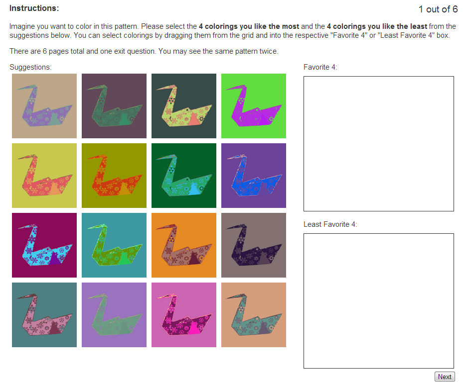

The dataset csv file contains a list of the top 82 artists ordered by their most popular pattern. The columns in this file are the artist name, the pattern id, a link to the pattern preview image, the list of colors used in the pattern in hex, and the pattern template id.
Blah blah number of meshes, weights of final learned model.
Here is the interface shown to participants in our perceptual evaluation. Participants drag their favorite and least favorite 4 patterns from the grid of suggestions to the respective answer boxes. 
Show them a HTML that shows all the results and their observed values.
Show them the style capture training sets.